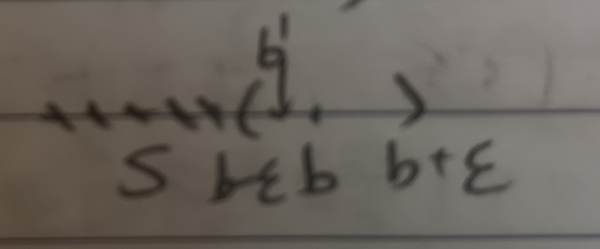

這份筆記是關於實數集合的最大上界與最小下界。
最大上界與最小下界
定義 1：上下界 (Upper and Lower Bounds)
給定一個實數集合\(S\)，則定義以下兩種集合：
定義 1-1：上界 (Upper Bound)
將集合\(S\)的上界定義為 \[B=\{b|x\leq b,\forall x\in S\}\]
定義 1-2：下界 (Lower Bound)
將集合\(S\)的下界定義為 \[A=\{a|x\geq a,\forall x\in S\}\]
註記 1-3
注意集合的上界\(B\)和下界\(A\)都是集合。
定義 2：最大下界和最小上界 (Greatest Lower Bound and Least Upper Bound)
給定實數集合\(S\)，其下界為\(A\)，上界為\(B\)。則我們可以定義以下兩種數：
定義 2-1：最大下界 (Greatest Lower Bound)
如果一個下界中的元素\(\tilde{y}\in A\)大於等於其他所有下界的元素(\(\forall a\in A, \tilde{y}\geq a\))，則稱\(\tilde{y}\)為\(S\)的最大下界。
定義 2-2：最小上界 (Least Upper Bound)
如果一個上界中的元素\(\tilde{x}\in A\)小於等於其他所有下界的元素(\(\forall b\in B, \tilde{x}\leq b\))，則稱\(\tilde{x}\)為\(S\)的最小上界。
例 2-3
令\(S=\{1,\frac{1}{2},\frac{1}{3},\frac{1}{4},\cdots\}\)，則\(S\)有上界\(1\)，下界\(0\)。
引理 3
若\(S\)的最小上界\(b\)存在且\(b\notin S\)，則\(\forall\epsilon>0\), \(\exists x_n\in S\) s.t. \(b-\epsilon<x_n<b\)
證明：假設此敘述不對，則對於所有\(b'\in(b-\epsilon,b)\)，\(b'\)也是一個最小上界且\(b'<b\)(見圖1)，故\(b\)就不是「最小」上界了，矛盾。QED
推論 3-1
在引理3的假設之下，\(\{x_n\}\)存在一個收斂到\(b\)的子序列\(\{x_{n_k}\}\)。
定理 4
若\(S\)是一個有界實數集合，則\(S\)有最大下界和最小上界。
證明：這裡只證明最小上界存在(最大下界同理)，令\(S\)的上界集合為\(B\)。
我們構造一個數列\(\{B_n\}\)，其中定義\(B_n\)為\(S\)的上界中，形如\(\frac{p}{2^n}\)的數中最小的那一個。很容易可以知道\(\{B_n\}\)是單調遞減且有界的，令\(\lim\limits_{n\to\infty}B_n=b\)。我們希望說明\(b\)是\(S\)的最小上界。
要說明\(b\)是最小上界，我們需要說明兩件事：
1.
\(b\)是上界，即\(\forall x\in S, x\leq b\)
2. \(b\)是最小上界，即\(\forall b'\in B, b\leq b'\)
1.的部分我們可以使用反證法，假設\(b\)不是上界，則令\(x\in S\)為使\(b<x\)的數。令\(\epsilon=x-b\)。因為\(b\)是\(\{B_n\}\)的極限，故存在\(B_n\)使得\(B_n\in(b-\epsilon,b+\epsilon)\)。於是\(B_n<x\)，但\(B_n\)也是上界，矛盾。
2.的部分也用反證法，假設存在上界\(B\)使得\(B<b\)，則\(\exists \frac{p}{2^{n_0}}\in\mathbb{Q}\)
s.t. \(B<\frac{p}{2^{n_0}}<b\)。易知\(\frac{p}{2^{n_0}}\)是上界(因為\(B\)是上界)，而由定義知\(B_{n_0}\leq\frac{p}{2^{n_0}}\)，故\(B_{n_0}<b\)。這和\(\lim\limits_{n\to\infty}B_n=b\)且\(\{B_n\}\)單調遞減有界矛盾。
於是，我們知道\(b\)是最小上界。QED